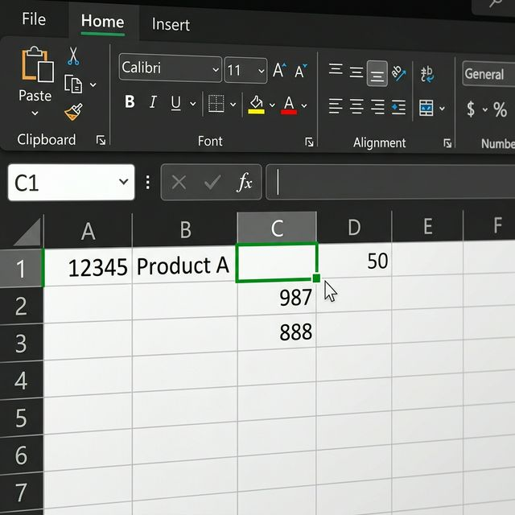
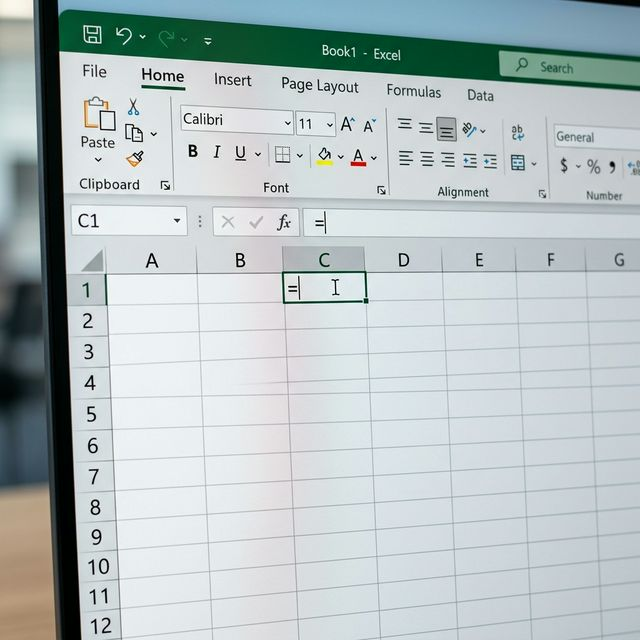
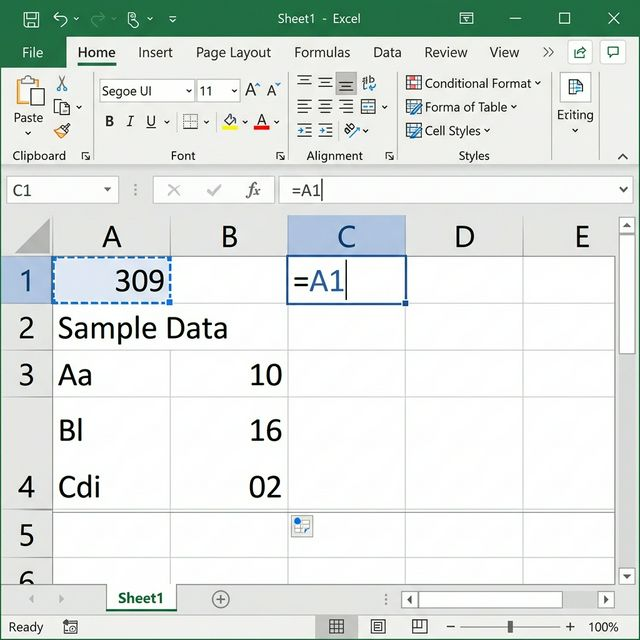
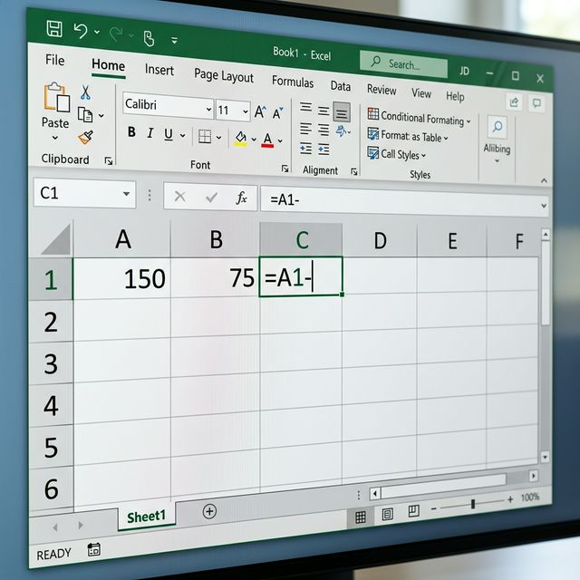
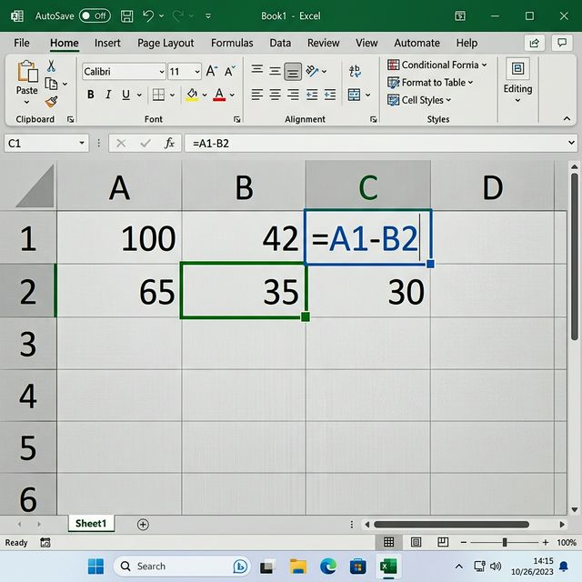

دليل شامل ومبسط للمبتدئين لفهم والعمل على جداول البيانات
الشريط (Ribbon) يوفر اختصارات للأوامر لتغيير الخط أو الخلية. ينقسم هذا الشريط إلى علامات تبويب (Tabs) تحتوي على مجموعات (Groups) من الأزرار تسمى الأوامر (Commands) لتنفيذ الإجراءات المختلفة داخل البرنامج.
لإجراء عملية طرح بسيطة بين خليتين، اتبع الخطوات التفاعلية التالية:
أولاً وقبل كل شيء، قم بالضغط بزر الفأرة الأيسر لاختيار الخلية C1 لتكون هي المكان الذي سيظهر فيه الناتج.

قم بطباعة علامة المساواة (=) في الخلية المحددة. هذه العلامة تخبر Excel بأنك ستقوم بكتابة معادلة حسابية وليس نصاً عادياً.

اضغط بالزر الأيسر للفأرة على الخلية A1 (والتي تحتوي مثلاً على الرقم 309). سيظهر اسم الخلية تلقائياً في معادلتك.

قم بكتابة علامة الطرح (-) من لوحة المفاتيح لتحديد نوع العملية الحسابية المراد تنفيذها.

اضغط بالزر الأيسر للفأرة على الخلية B2 (والتي تحتوي مثلاً على الرقم 35)، ثم اضغط على زر Enter لإظهار النتيجة النهائية.

تستخدم لنسخ البيانات أو إنشاء تسلسلات تلقائياً لتوفير الوقت. يتم ذلك بالنقر المزدوج على أيقونة الملء الزرقاء/الخضراء أسفل زاوية الخلية، أو عن طريق سحبها.
هي مراجع خلايا تتغير تلقائياً عند نسخ الصيغة إلى خلايا أخرى، لتتكيف مع الموقع الجديد بالنسبة للخلية الأصلية.
هي مراجع خلايا ثابتة لا تتغير عند النسخ. يتم تمييزها بعلامة الدولار قبل الحرف والرقم، مثال: $A$1.
يعد برنامج إكسل (Excel) أداة قوية ومرنة لا غنى عنها في جمع وتحليل البيانات. من خلال فهمك لأساسيات واجهة المستخدم (مثل الشريط والأوراق والخلايا)، وإتقانك لكيفية كتابة المعادلات الحسابية الدقيقة، بالإضافة إلى استخدام الأدوات الذكية كالتعبئة التلقائية (Fill) وفهم الفرق بين المراجع الثابتة والمتغيرة، ستتمكن من توفير الكثير من الجهد والوقت لبناء جداول متقدمة واحترافية.